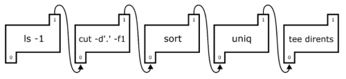

#!/bin/bash- Shell Script 를 처음 작성할때
Shell(해시뱅)을 지정해야하는게 원칙이다
기초 문법
변수
a="하이"
echo "$a"
# 명령에 출력 결과를 변수로 받는 방법
res="$(ls -a)"- 변수 선언 시 공백이 발생하면 안됨
- 변수 사용 시 숫자 포함하여 무조건
""붙여야 함
조건문
if
if [ "조건1"=="값" ]; then
명령어
# if not
elif ! [ "조건2"=="값" ]; then
명령어
else
명령어
fi-
파일/디렉토리 존재여부
if [ -e "파일경로" ]; then echo "파일이 존재함" fi if [ -d "디렉토리 경로" ]; then echo "디렉토리가 존재함" fi -
빈 문자열 확인
if [ -z "문자열" ]; then echo "문자가 비어있음" fi -
숫자 비교
if [ 10 -gt 5 ]; then echo "5보다 큼" fi- 일반적인 연산자가 작동은 하긴 하는데 이상함 그래서 아래 숫자 비교 연산자 에서 참고해서 쓸 것
-
문자열 패턴 처리 (Bash 에서)
str="omg hello" if [[ "$str" == *"hello"* ]]; then echo "hello 라는 문자열이 포함" fi -
논리 연산 (다중 조건)
# or if [ 조건1 ] || [ 조건2 ]; then 명령어 fi # and if [ 조건1 ] && [ 조건2 ]; then 명령어 fi
switch-case
case "$변수" in
"값1")
명령어
;;
"값2"|"값3")
명령어
;;
# default (기본 명령 지정 안할 꺼면 없에도됨)
*)
명령어
;;
esac숫자 비교 연산자
| 비교 연산자 | 의미 | 비교 연산자 |
|---|---|---|
| -eq | 같음 | == |
| -ne | 같지 않음 | != |
| -gt | 보다 큼 | > |
| -ge | 보다 크거나 같음 | >= |
| -lt | 보다 작음 | < |
| -le | 보다 작거나 같음 | ⇐ |
반복문
for
===python 스타일===
for var in {<시작값>..<종료값>..<증감값>}
do
echo $var
done
===C계열 스타일===
for ((var=0; var < 5; var++));
do
echo $var
done
#무한 루프
for (( ; ; ));
do
echo "Hello World"
done-
배열 항목 처리
array=("항목1" "항목2") string_array="항목1 항목2" for item in "$array" do echo $item done- shell 에서 for 문에 항목은 문자열 띄어쓰기로도 구분 가능하다 한다
"값1 값2"
- shell 에서 for 문에 항목은 문자열 띄어쓰기로도 구분 가능하다 한다
while
while [ 조건 ]
do
명령어
done
# 무한 루프
while :
do
명령어
done기초 연산
근본은
expr <연산>이지만 아래 방식이 더 편함
- 논리 연산 같은
true,false형태의 값은1,0으로 취급
# 덧셈
$((a+b))
# 뺄샘
$((a-b))
# 나눗셈
$((a/b))
# 곱셈
$((a*b))
# 나머지
$((a%b))
# 거듭제곱
$((a**b))
# 비교
$((a>b))
# 논리
$((a||b))
# 증감
$((a++))
$((a--))
# 복합 할당
$((a+=1))표준 입력
read a
echo "$a"실행인자 처리 (args)
# 각각 따로처리
echo "1번인자: $1"
echo "2번인자: $2"
echo "3번인자: $3"
# 모든 인자를 배열로 취급
args=("$@")
echo "${args[0]}"
# 가장 마지막 인자 선택
args=${!#}
echo "$args"배열
# 배열은 () 내부에 값을 띄어쓰기 형태로 구분하여 생성한다
array=("foo" "bar" "foobar")
# 배열에 값 추가
array+=("test")
# 아무것도 인덱스를 지정하지 않으면 0번 인덱스
echo "$array"
# python 처럼 음수 인덱싱이 가능함
echo "${array[-1]}"
# 모든 베열 원소 나열
echo "${array[@]}"Pipe
어떤 명령의 출력값(Stdout)을 다른 프로그램에 입력값(Stdin) 으로 사용
ls | sort | less해당 명령을 해석하자면 ls 명령에 출력을 sort 라는 명령에 입력으로 쓰고, 다시 sort의 출력값은 less의 입력 값이 됨
즉 sort, less 두 프로그램은 Stdin 스트림을 열어둔 상태인거임, 어떤 방식으로든 해당 프로그램에 표준입력값을 줄 수 있다면 작동한다는 것
심화로, 이렇게 파이프로 연결된 각각의 명령어들은 쉘에 의해 fork가 일어남
ls, sort, less 모두 각각의 프로세스가 할당되어 서로 병렬로 처리되는데
각각의 프로그램이 이전 프로그램에 Stdout으로 Stdin 스트림에 도착하기 전까지 wait 상태로 대기 했다가 처리되는 구조

Redirection
어떤 명령에 출력값들(Stdout, Stderr)등을 파일로 저장하거나, 각각에 스트림을 분리 시킬때 사용
요약하자면, 특정 프로그램에 입/출력 File Descriptor를 원하는 쪽으로 스트림을 바꿈
출력 결과를 파일로
# 기존 파일 내용을 덮어쓰며 stdout결과 파일에 저장
ls > file.txt
# 기존 파일에 추가하여 stdout결과 파일에 저장
ls >> file.txt
# stdout, stderr 출력 모두 file.txt에 저장
# 2=ls에 stderr값 (File Descriptor값 2)을 가져와서
# &1= /dev/stdout에 결과를 저장 (즉 stderr을 stdout으로 변환함)
ls > file.txt 2>&1
# stdout 값만 file.txt에 저장
ls 2> file.txt
# stdout은 file.txt에, stderr은 err.txt 에
ls > file.txt 2> err.txt출력 분리
/dev/null이라는 아무 존재도 없는 파일에Redirection하여 출력 결과를 지우는- 위치가 달라진다 뿐, 위에 파일 수정 부분이랑 사용법은 동일
# stdout 출력값 무시
ls > /dev/null
# stdout, stderr 모든 출력 무시
ls > /dev/null 2>&1파일 내용을 프로그램에 입력(Stdin) 으로 사용
- 어찌보면 Pipe와 비슷하다고 볼 수 있으나, 이거는 무조건 파일에 내용만 가지고 하는거임, 즉 프로그램 실행 결과를 전달하는건 불가함
# file.txt에 있는 모든 내용이 ls에 stdin스트림에 씀
ls < file.txt표준 I/O 대한 File Descriptor
경로를 아래 경로로 지정하면 출력 스트림을 다른 출력 스트림으로 바꾸는게 가능하다
/dev/stdin|%0/dev/stdout|%1/dev/stderr|%2/dev/null
사용 팁
자체 표준 입력 프로그램 처리
mysql -u [유저] --password=[패스워드] -h [주소] << EOF
use mars;
select *from User;
EOF- Mysql 처럼 cli를 통해 해당 자체 쉘에 접속되는 경우
<< EOF구문을 통해 해당 콘솔에 명령을 보낼 수 있다
Shell 명령 결과를 echo 로 출력
echo $(ls -a)쉘 에서 실행한 프로그램 제어
#nohup 으로 프로그램 실행
COMMAND="nohup your_command &"
# nohup으로 실행된 프로그램 PID 값 얻기
CMD_PID=$!$!변수를 사용하여 nohup을 통해 실행한 프로그램PID값을 얻을 수 있다- 이를통해 특정 작업 이후 프로세스를
kill하거나 하는게 가능하다- nohup을 수행하면 콘솔이 대기상태에 들어가는 느낌이 들 수 있는데
- 사실
&으로 인해 그렇게 보이는거지 거기가exit같은걸 입력하면 잘 입력된다
- 근데
npm을 통해 명령 수행하면npm자체의 pid값은 얻을 수 있지만npm이 수행한pid값을 얻을 수는 없는 듯 하다
예약 문자열
-
bash -c:- 일부 프로그램들에서 shell script 가 사용가능한 경우 여러 명령어를 입력하기 위해 사용
test bash -c "커맨드1 && 커맨드2" -
\: 문장 끝에 붙이면 개행을 무시하도록 하는test a \ b #이거와 같다 == test a b == -
&&: 앞에 명령에서 실패 종료코드가 반환되지 않는경우 다음 명령을 수행# apt update가 정상적으로 종료되면 apt install -y를 수행 apt update && apt install -y -
;: 앞에 명령에 종료 코드와 상관 없이 다음 명령을 수행# apt update가 정상적으로 종료되지 않아도 apt install -y를 수행 apt update; apt install -y # command1이 정상적인 종료 코드면 성공 아니면 실패 command1 && echo "성공" || echo "실패"
실행 프로그램에만 환경변수 설정하기
키=값 <실행프로그램>- 당연하지만 1회성으로 작동한다
현재 쉘에서만 환경변수 설정하기
- 쉘 끄면 그때 사라짐
export 키=값globbing 문제
-
스크립트를 사용할때 파일을 선택하는 특수 문자열이 있다. 이것들을
globbing pattern이라고 한다*,?,[]등
-
해당 문자열에 대한 처리가 실행하는 명령어나, 프로그램이 처리하는게 아니라 Bash 같은 쉘이 이걸 직접 처리하게 된다.
-
예를들어
*을 인자로 넘겨준 경우 쉘이 이걸 변환해서 해당 폴더에 모든 파일들을 나열하게된다. -
그레서
globbing pattern에 해당하는 문자열은 실행인자로 처리가 불가하다 -
아래 명령어를 실행해보면 이해가 잘 될것이다
echo *
유용한 명령어
-
파일 절대경로 반환
realpath "상대 경로" -
문자열 치환
tr <기존 문자열> <바꿀 문자열> -
출력 형식을 지정하여 문자열 출력
printf "%d+%d=%d" 10 20 30 -
명령어에 결과를 파일에 저장함과 동시에 stdout으로 출력값 전달
ls -a | tee <저장파일명> | cat- 언뜻 보기에 이걸 왜 쓰나 싶지만,
tee는 Pipe와 Pipe 사이를 연결하는 역할을 한다. - Pipe를 사용하면 중간에 파일로 저장하거나 하는게 힘들기 때문에 tee를 써서, 저장함과 동시에 이걸 stdout으로 출력하여 다음 Pipe에 전달 할 수 있다.
- 언뜻 보기에 이걸 왜 쓰나 싶지만,